自作 CPU を PC につなぐ、UART 上の約束事
CR+LF。シリアル端末で手打ちして試せる。+（成功）／-（エラー）の 1 文字で見分ける。印のない行は CPU 自身の通知（着手など）。BO など残りは任意で、読み飛ばしてよい。| < | PI | PING（起動・生存確認） |
| > | +PI | PI 成功応答 |
| < | VE | VERSION 問い合わせ |
| > | +VE02MyCPU-v1 | VE 成功応答（先頭 2 桁はプロトコルバージョン） |
| < | SB | START BLACK（黒先攻・初手要求） |
| > | MOf5 | MOVE f5（CPU 自発の着手） |
| < | MOd6 | MOVE d6（相手着手通知） |
| …（以下、手番ごとに交互） | ||
| > | EN | END（CPU 自発の投了・終局） |
< PC→CPU > CPU→PC 行末の CR LF は省略
| 方向 | 書式 | 意味 |
|---|---|---|
| PC→CPU | SB SW | あなたは黒（先攻）／白 |
MOd3 | 相手が d3 に置いた | |
PA | 相手がパス | |
EB EW ED | 終局（黒勝ち／白勝ち／引分） | |
VE PI | バージョン／生存の問い合わせ | |
| CPU→PC | MOd3 PA | 着手／パス |
+PI +VE02… | 問い合わせへの成功応答 | |
-00 | 仕様違反を受けたときの応答（固定で可） |
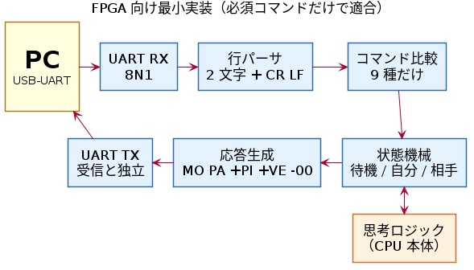
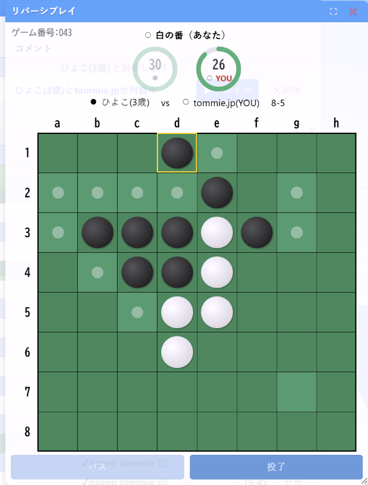
PA を返してきた。PC はパスとして通すか、不正応答にするか。SB / SW が届いた。現対局を捨てて新規にするか、無視するか。PA（相手パス通知）が届いた。無視するか、-06 を返すか。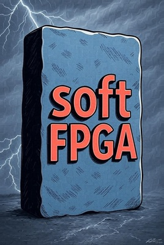
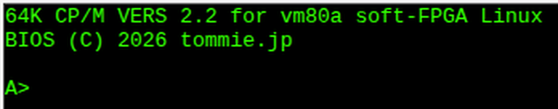
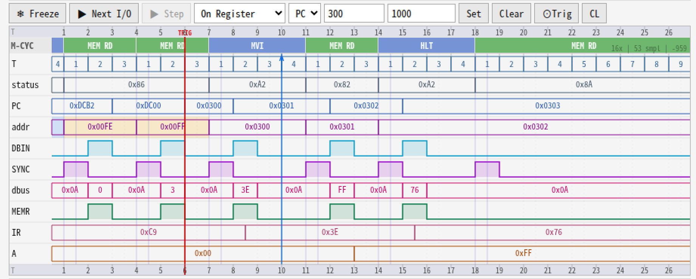
Verilog で書いたレトロ CPU を Verilator で C++ にし、WebAssembly にしてブラウザで動かします。命令エミュレータでは見えない内部信号（T‑state、バスサイクル、状態遷移）をリアルタイムに観測できるのが取り柄です。
デモ机では 6502 / Apple‑I を Raspberry Pi Pico 2 の実機でも動かします（当日の状況により Wasm 版）。
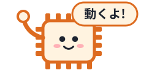
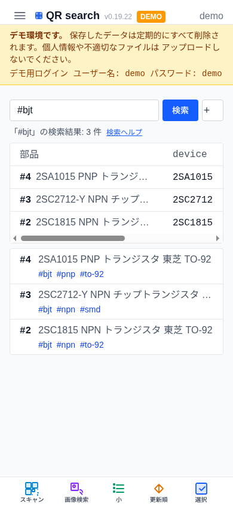
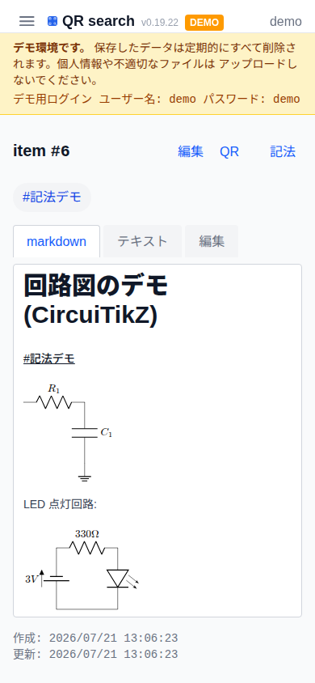
部品に貼った QR シールをスマホで読むと、その部品のノート（特性表、回路図、メモ）が開きます。部品が増えても、読み取るだけで該当ノートにたどり着けます。
デモはログイン demo / demo。データは毎時 0 分にすべてリセットされます。
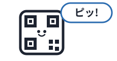
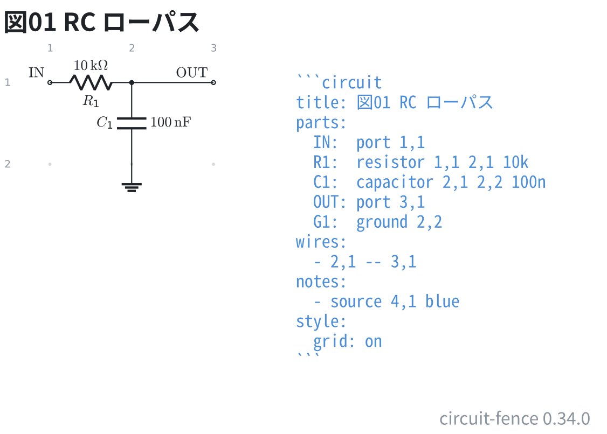
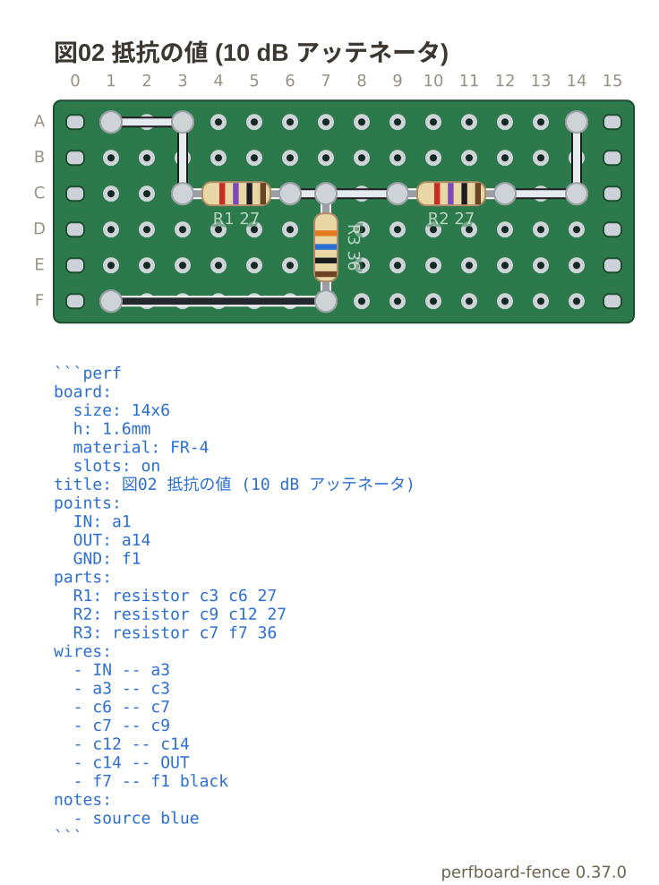
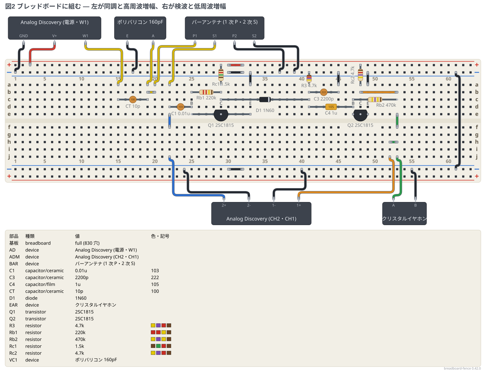
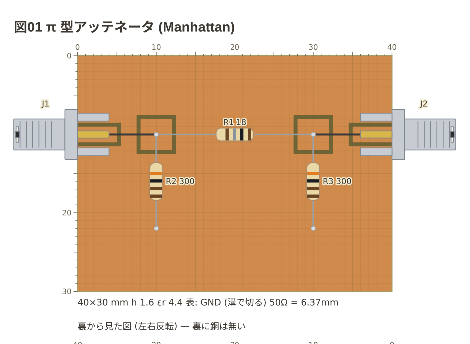
Markdown のコードフェンスに YAML で部品と配線を書くと、回路図、ブレッドボードの実体配線図、ユニバーサル基板の配線図、銅張り基板の寸法図になります。回路図と実体配線図を同じ記法で並べて描けます。
図の流儀（信号は左から右、電位の高いほうが上、など）を Claude 用の skill 集にもしています。